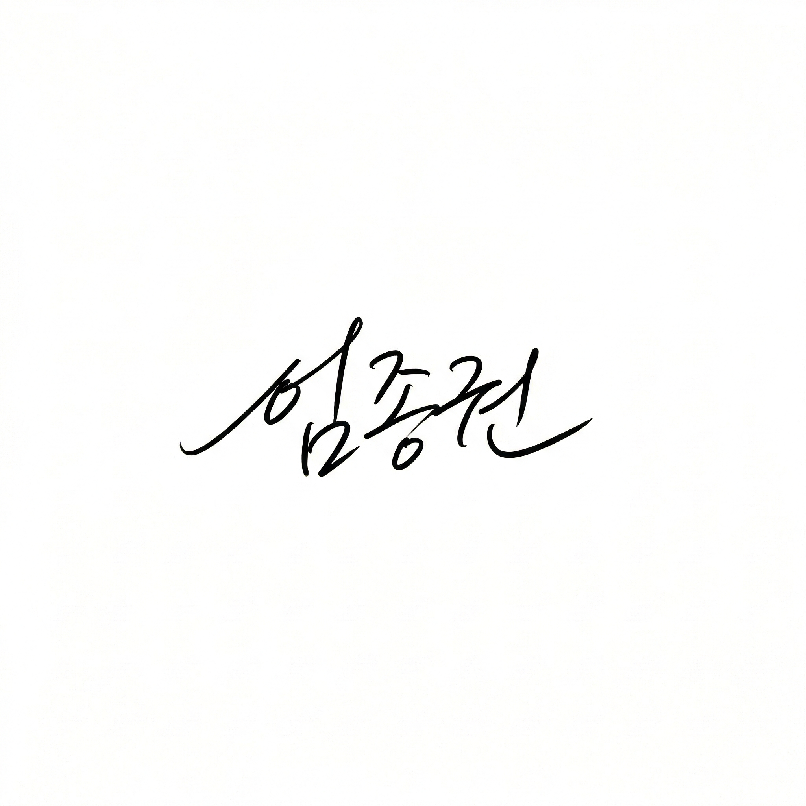

입 사 지 원 서
지원분야 : 국민은행 철산 사무지원
■ 인적사항
| 성 명 | 임 종 권 (林 鐘 權) | 생년월일 | 1992년 01월 04일 |
|---|---|---|---|
| 연락처 | 010-4052-0834 | 이메일 | ssujklim@gmail.com |
| 주 소 | 경기도 광명시 도덕로 79 (광명동, 상우1차아파트) 1405호 | ||
| 병 역 | 공군 병장 만기제대 (2010.07 ~ 2012.08) | 보훈여부 | 해당없음 |

■ 학력사항
| 학교명 | 전공 / 학과 | 학위 | 재학기간 | 졸업구분 | 비고 |
|---|---|---|---|---|---|
| 숭실대학교 사회복지대학원 | 사회적기업전공 | 석사 | 2018.03 ~ 2020.02 | 졸업 | GPA 4.3/4.5 |
| 숭실대학교 공과대학 | 전기공학부 / 경제학 복수전공 | 학사 | 2010.03 ~ 2017.02 | 졸업 |
■ 경력사항
| 회사명 | 부서/직책 | 근무기간 | 고용형태 | 주요 담당업무 |
|---|---|---|---|---|
| (사)함께만드는세상 경영지원부 인프라지원팀 |
총무·IT지원 (대리) |
2023.01 ~ 2026.02 (3년 2개월) |
정규직 | 인프라 예산 집행·관리, 외주업체 계약·정산, ERP 도입(Tibero DB), 문서 작성, 총무 행정 |
| (주)맨지온 개발부 |
임베디드개발·QA (대리) |
2020.03 ~ 2021.11 (1년 9개월) |
정규직 | IoT 시스템 개발, QA 시나리오 설계, 데이터 로그 분석 |
| (주)엣지크로스 기술연구소 |
HW개발·자재관리 (주임) |
2016.05 ~ 2018.02 (1년 9개월) |
정규직 | 회로설계, 자재 BOM 관리, 시제품 제작·검증, 연구 행정 지원 |
■ 자격증 및 기술
| 자격증 | 사회복지사 1급 (보건복지부, 2021.02) · 1종 대형 운전면허 (2019, 12년 무사고) |
|---|---|
| 수상 | 2022 메타버스 콘텐츠 리크루팅 캠프 대상 (과학기술정보통신부) |
| OA 능력 | Excel (Pivot·VBA·Power Query 고급), 한글(HWP), MS Word, Notion · SQL (Tibero DB) |
■ 자기소개서
▶ 지원동기 및 입사 후 포부
저는 경기도 광명시에 거주하며 국민은행 철산 빌딩 근무지와 매우 가까운 거리에 있습니다. 장거리 출퇴근 없이 업무에 온전히 집중할 수 있는 환경에서 일하고 싶어 지원하였습니다.전 직장 (사)함께만드는세상은 저신용·취약계층을 대상으로 소액 대출(여신)을 제공하는 사회연대은행의 운영 법인입니다. 3년 2개월간 경영지원부에서 사무 행정을 담당하면서, ERP(High-Q) 도입 프로젝트를 통해 여신·채무·채권·약정·이자 관련 회계 프로세스를 직접 설계하고 데이터를 관리한 경험이 있습니다. 금융기관 특유의 여신 업무 흐름과 관련 문서 체계에 익숙하며, 한글·엑셀·워드를 일상적으로 활용하여 데이터 입력 정확도와 문서 정리 체계에 강점을 갖고 있습니다.
입사 후에는 빠른 적응을 통해 팀의 사무 흐름에 즉시 기여하고, 금융기관 문서 관리와 데이터 입력 업무를 정확하고 꼼꼼하게 수행하겠습니다.
▶ 성격 및 장단점
꼼꼼함과 성실함을 강점으로 합니다. 예산 집행 내역을 원 단위까지 정리하거나 수천 건의 데이터를 검증하는 반복 업무를 끝까지 완수하는 데 익숙합니다. 단점으로는 낯선 업무 초기에 확인 과정이 많아 속도가 다소 느릴 수 있으나, 체크리스트 선 작성 습관으로 보완하고 있습니다.
위 기재 사항은 사실과 다름이 없음을 확인합니다.
2026년 3 월 23 일
지원자 :

임종권